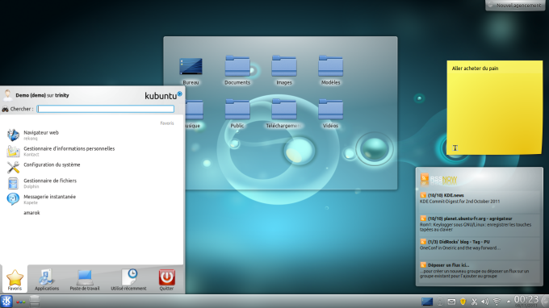
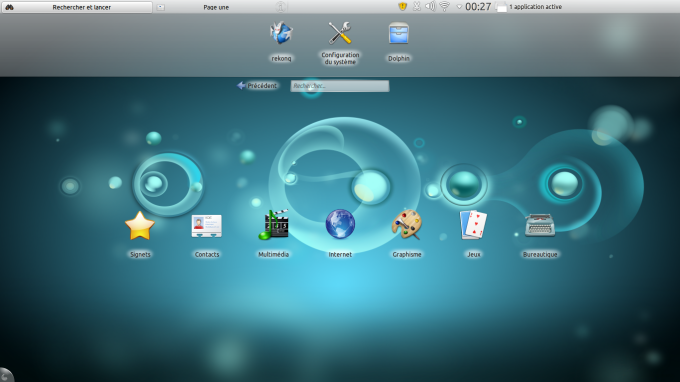
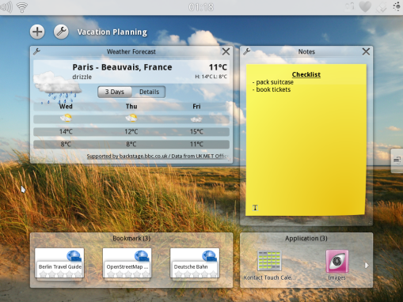

11 novembre 2011
1/22
2/22
3/22
KDE a 15 ans !
4/22
5/22
Pour les machines de bureau
6/22
Pour les... netbooks
7/22
Pour les tablettes (en développement)
8/22
|
|
9/22
10/22
11/22
12/22
13/22
14/22
15/22
16/22
17/22
18/22
19/22
20/22
21/22
22/22
| Table of Contents | t |
|---|---|
| Exposé | ESC |
| Full screen slides | e |
| Presenter View | p |
| Source Files | s |
| Slide Numbers | n |
| Toggle screen blanking | b |
| Show/hide slide context | c |
| Notes | 2 |
| Help | h |